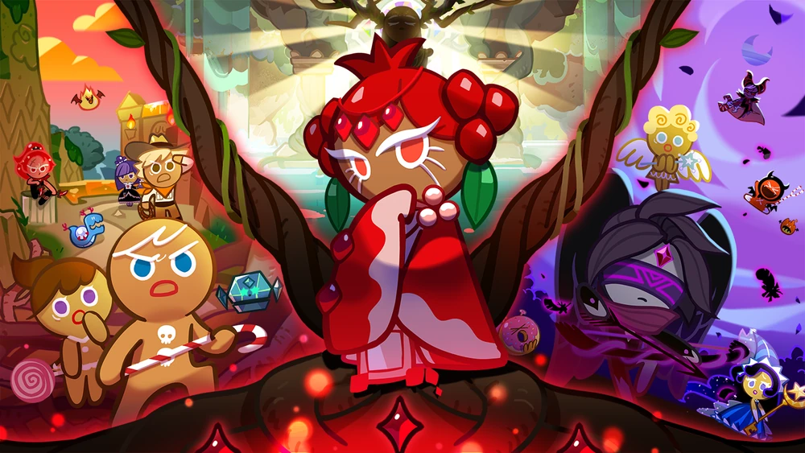

Cookie Run is a series of mobile games made by Devsisters, a Korean game company. Like the name suggests, the theme is running cookies. While the game contains plenty of stories, it often focuses on the protagonist, Gingerbrave, who escapes from the oven and the witch, and meets up various other cookies and goes on an adventure.
The first version of Cookie Run, Ovenbreak (2009) has a vastly different artstyle, though the theme of cookies and witches, and the gameplay is still there. This is also where Dozer (A cookie not present in any games but Witch's Castle) made his first appearance, but he presummedly got eaten by the witch.

In 2011, Ovenbreak 2 was released, with more playable cookies, such as GingerBright, GingerBerry (Currently known as Strawberry Cookie), NinjaBread (Current known as Ninja Cookie), and more. It's also where pets are first implemented.

Eventually, Cookie Run for Line, Kakao and QQ was released (2014). In this game, plenty of new content and lore was added. Plenty of cookies are added (such as Moonlight Cookie, Tiger Lily Cookie, Peach Cookie etc.), and they have different ranks (rarities). It establishes several worldbuilding stuff, including Dragon's Valley, Dessert Paradise, Cookie Kingdom (A.K.A. Hollyberry Kingdom currently) and City of Wizards.

In 2016, Cookie Run Ovenbreak was released (My first CR game). Not only does it have plenty of game modes and monthly updates, it also releases entertaining stories frequently, they are either slice-of-life stories, or lore heavy stuff that build the worldbuilding and the personalities of the cookies. The mainline stories include Cookies of Darkness, Time Balance Department, the Dragons, the Nova Cookies and more.

In 2021, Cookie Run Kingdom is released, which is perhaps the one you are most familiar with. Instead of the usual runner gameplay, this game focuses on kingdom building and RPG-style gaming. The story mainly focuses on the Ancients, the Cookies of Darkness and the Beasts.